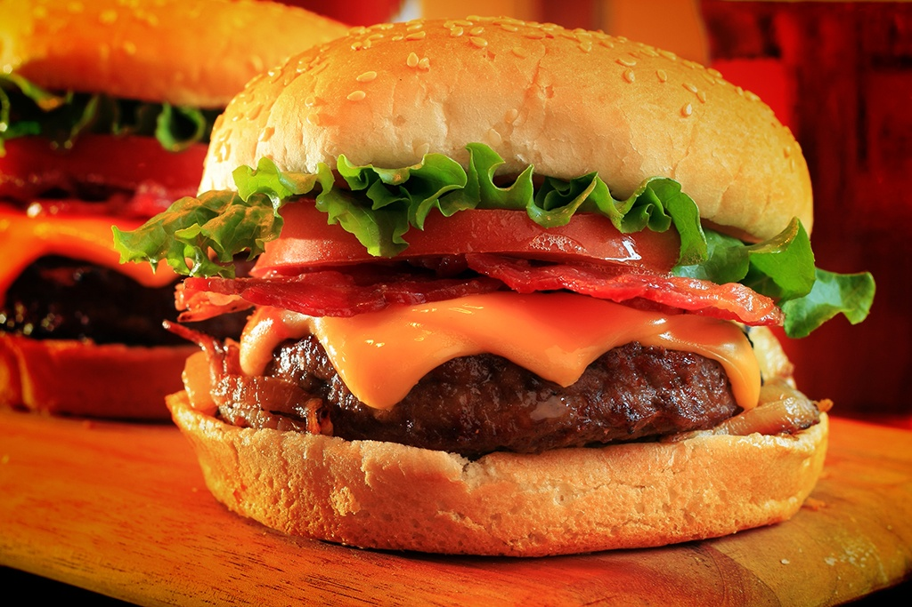

Hamburguer

Description
A hamburger is a sandwich consisting of a cooked meat patty on a bun or roll. You can order a hamburger, fries, and a shake at most fast food restaurants.
Hamburgers are traditionally made with ground beef and served with onions, tomatoes, lettuce, ketchup, and other garnishes.
Ingredients
- 1 1/2 pounds ground beef (80% to 85% lean)
- Kosher salt
- Freshly ground black pepper
- 4 to 6 hamburger buns, split
- Butter or oil, for the pan
- 4 to 6 slices cheese, such as cheddar, swiss, American, or provolone (optional)
- Burger toppings: sliced tomatoes, sliced onions, lettuce, ketchup, mustard, BBQ sauce, pickles, relish
Preparation
- Divide the ground beef. Divide the ground beef into 4 or 6 portions, depending on the number of burgers you would like to make.
- Shape the patties. Gently press each portion of ground beef into a disk about 1-inch thick. Press the middle to create a shallow "dimple" and pat the edges into a round — the patty should look like a frisbee and be slightly larger than your burger buns. Don't worry if there are some cracks in the edges; try not to mash the beef too much as you shape the patties.
- Warm the pan. Heat a pat of butter or a teaspoon of oil in a griddle or large skillet over medium heat.
- Toast the buns. Working in batches if needed, place the bun halves cut-side down in the warm butter or oil. Toast until the surface is golden-brown. Transfer the toasted buns to a serving plate.
- Increase the heat to medium-high. Increase the heat to medium-high, and keep a careful eye on the pan. When you see the first wisp of smoke, you're ready to cook the burgers.
- Cook the burgers for 3 to 5 minutes. Place the burger patties in the hot pan, leaving a little space between each one. Work in batches if necessary. The burgers should sizzle on contact — if they don't, nudge the heat up a little. Generously season with salt and pepper, and cook for 3 to 4 minutes.
- Flip the burgers and cook another 3 to 5 minutes. Quickly slide a spatula under the burgers and flip to the other side. You should see a dark brown sear on the underside — if not, increase your heat next time. Season the other side generously with salt and pepper, and cook for another 3 to 5 minutes to your preferred doneness. If the burger falls apart when you flip, just press the edges together and carry on — your burger will still be great!
- To make cheeseburgers. If making cheeseburgers, top the burgers with cheese as soon as you flip them. If the cheese isn't melting fast enough, cover the pan with a lid or other dome to encourage the cheese to melt.
- Finish the burgers. When the burgers have finished cooking, transfer them to the toasted buns and finish with your favorite burger toppings.
This recipe was obtained from the kitchn
Back to Odin Recipes